| Summary Stats | |||||||||
| variable | n | mean | sd | median | trimmed | min | max | skew | kurtosis |
|---|---|---|---|---|---|---|---|---|---|
| roughness | 7,107.00 | 47.27 | 46.46 | 32.00 | 40.06 | 0.00 | 376.00 | 1.44 | 2.37 |
| canopy_cover | 7,107.00 | 34.84 | 31.49 | 28.00 | 33.13 | 0.00 | 92.00 | 0.29 | −1.51 |
| northness | 7,107.00 | −2.73 | 69.75 | −2.00 | −3.35 | −100.00 | 100.00 | 0.06 | −1.47 |
| eastness | 7,107.00 | −3.89 | 69.44 | −4.00 | −4.79 | −100.00 | 100.00 | 0.08 | −1.46 |
| vapor_max | 7,107.00 | 1,109.70 | 354.75 | 1,082.00 | 1,102.57 | 306.00 | 2,020.00 | 0.13 | −1.12 |
| precip_annual | 7,107.00 | 1,146.37 | 1,012.37 | 695.00 | 986.68 | 171.00 | 5,909.00 | 1.27 | 1.09 |
| vapor_min | 7,107.00 | 135.08 | 74.34 | 129.00 | 132.70 | 12.00 | 352.00 | 0.24 | −1.03 |
| temp_annual_mean | 7,107.00 | 8.49 | 2.39 | 8.95 | 8.76 | −7.89 | 12.63 | −1.03 | 0.99 |
| temp_annual_min | 7,107.00 | −3.21 | 3.14 | −3.76 | −3.27 | −15.43 | 4.50 | 0.25 | −0.78 |
| temp_annual_max | 7,107.00 | 13.89 | 2.82 | 14.53 | 14.16 | −2.98 | 19.06 | −0.93 | 0.66 |
| elevation | 7,107.00 | 681.42 | 481.97 | 618.00 | 635.04 | 0.00 | 3,817.00 | 0.85 | 0.57 |
| temp_january_min | 7,107.00 | 3.10 | 2.25 | 3.19 | 3.25 | −12.81 | 8.14 | −0.65 | 0.53 |
| dew_temp | 7,107.00 | 2.17 | 2.86 | 1.80 | 2.20 | −14.45 | 8.56 | −0.02 | −0.12 |
Optimism Bias in Ecological Modeling
Rob Wiederstein
Introduction
Research Objectives
Stationarity: Do the biophysical rules of a forest in the Pacific Northwest hold true in the Deep South?
Spatial Leakage: Does including Latitude and Longitude create a robust model, or a fragile one that cannot generalize?
The forested Package

contains data frames intended for use in predictive modeling applications where the more easily-accessible remotely sensed data can be used to predict whether a plot is forested or non-forested.
The First Law of Geography
“Everything is related to everything else, but near things are more related than distant things.” — Waldo Tobler (1970)
Law or Guidepost
“It is not and has never been the case that Tobler’s first law of geography . . . always holds absolutely. This is and has always been an oversimplification, disguising possible underlying entitation, support, and other misspecification problems.”[1]
Forest Locations
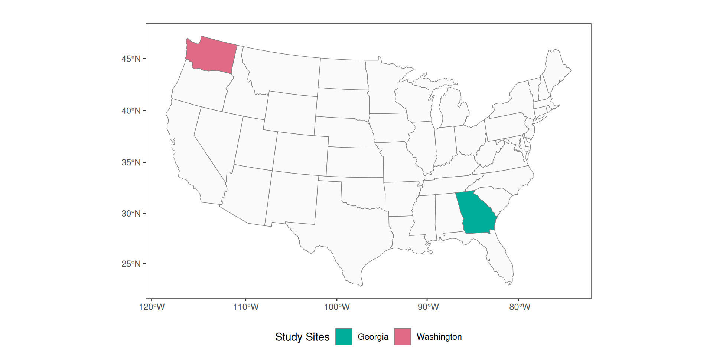Figure 1: Map shows the geographic distance separating Washington and Georgia.
Regional Forestation
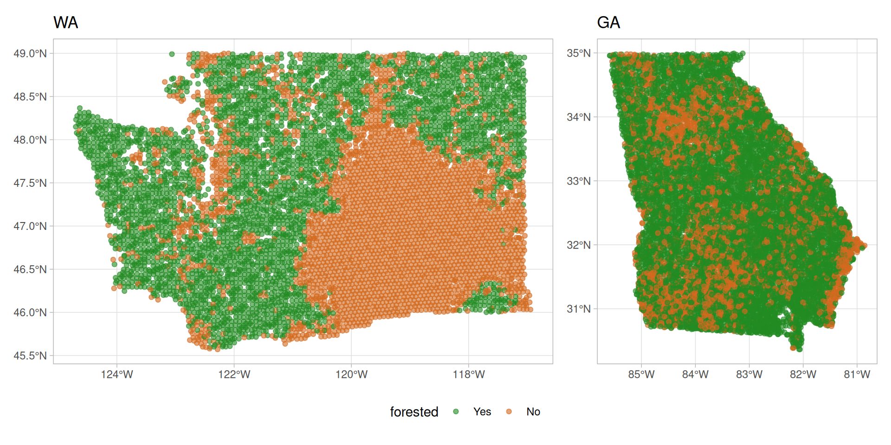Figure 2: Caution: States are rescaled independently to maximize clarity.
Ecoregion Complexity: West vs. East
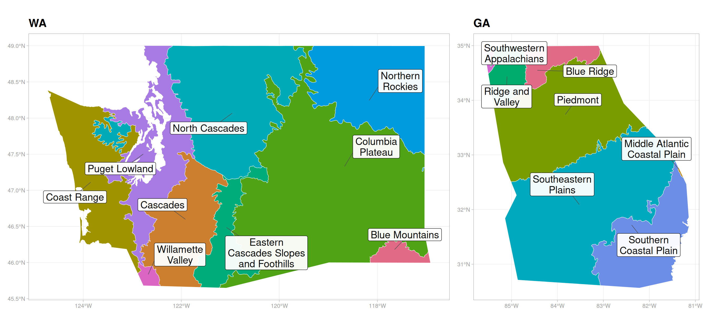Figure 3: Level III Ecoregions: A comparison of western complexity (WA) vs. eastern stratification (GA). Data sourced from U.S. EPA Level III Ecoregions [2], [3].
Explore
Descriptive Summary
Distributions
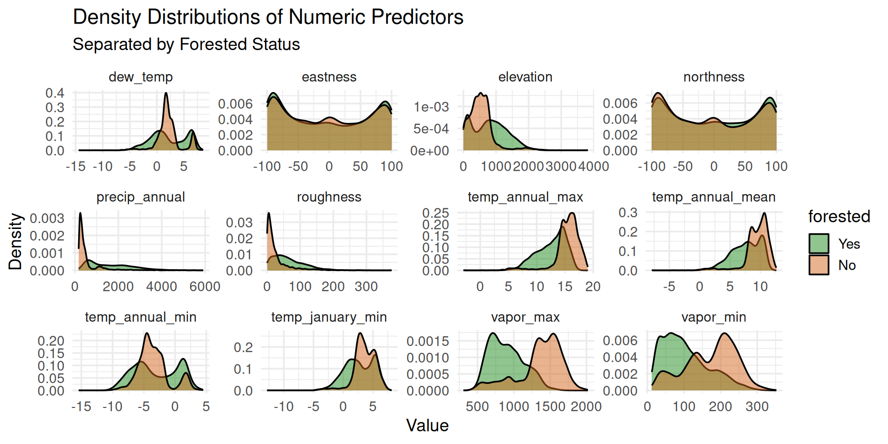Outliers
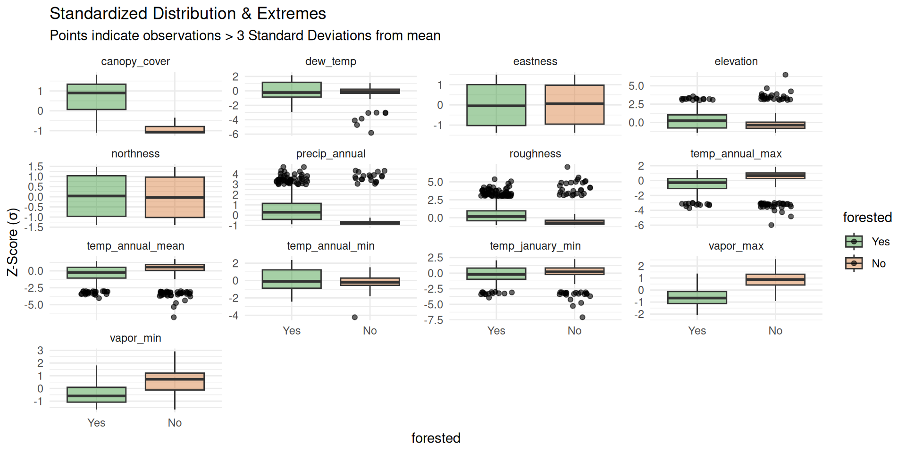Map Outliers
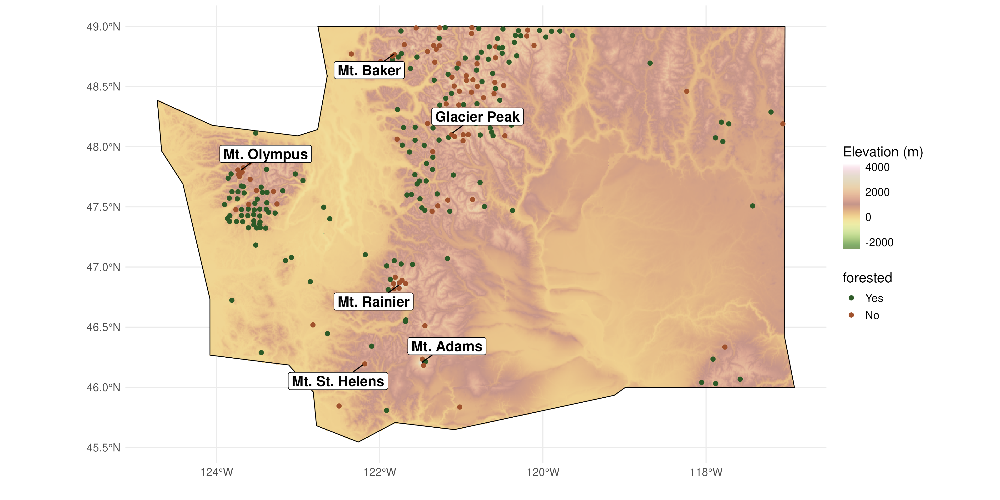Figure 4: The Biophysical Edge: 3-Sigma extremes reveal alpine mixing
Principal Component Analysis
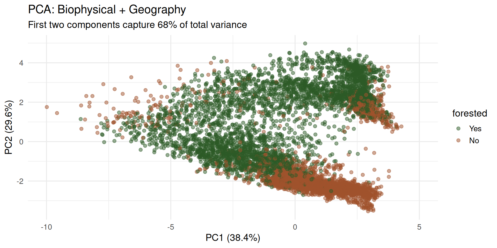Correlogram
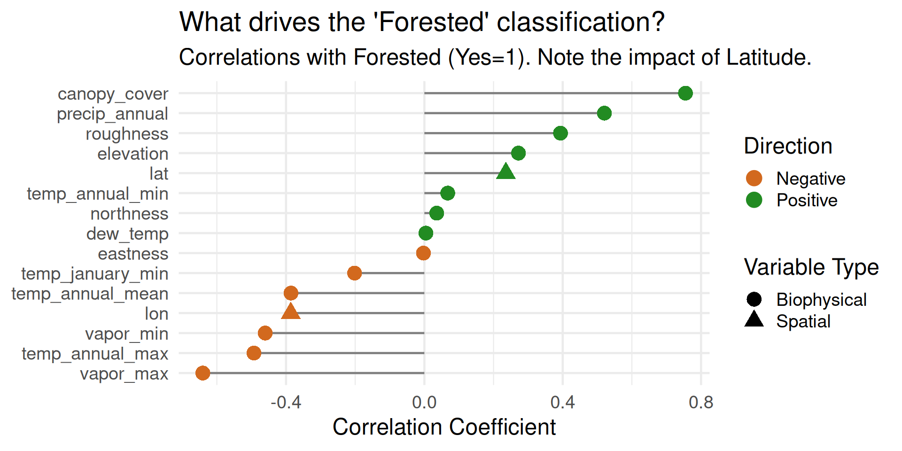VIP
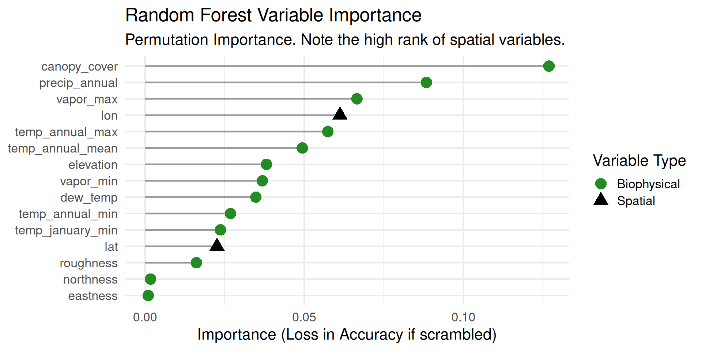UMAP
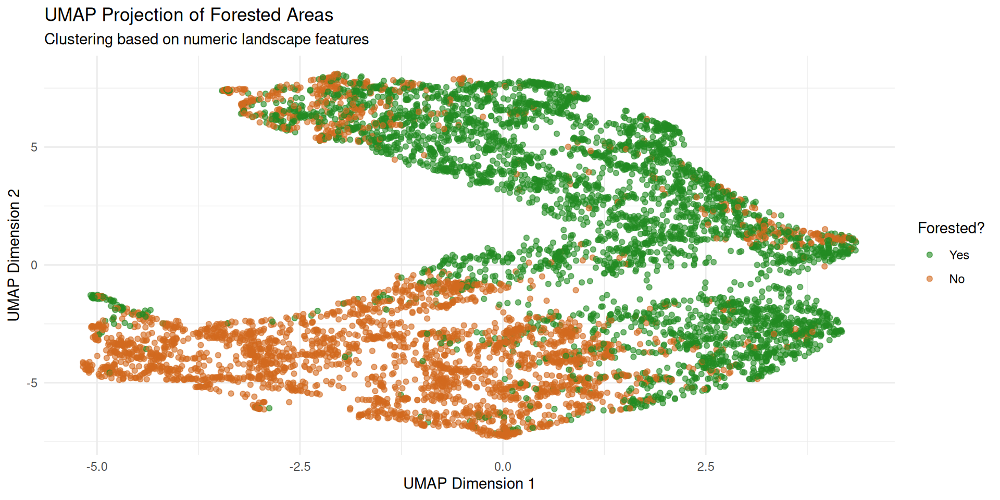Resampling
Spatial Autocorrelation
“When data are not independent (e.g. due to spatial autocorrelation), random cross-validation yields optimistic estimates of predictive performance because training and test sets are not independent.”[4]
The Mechanics of Resampling

Figure 5: Visualizing the resampling process [5]
Random K-Fold Cross-Validation
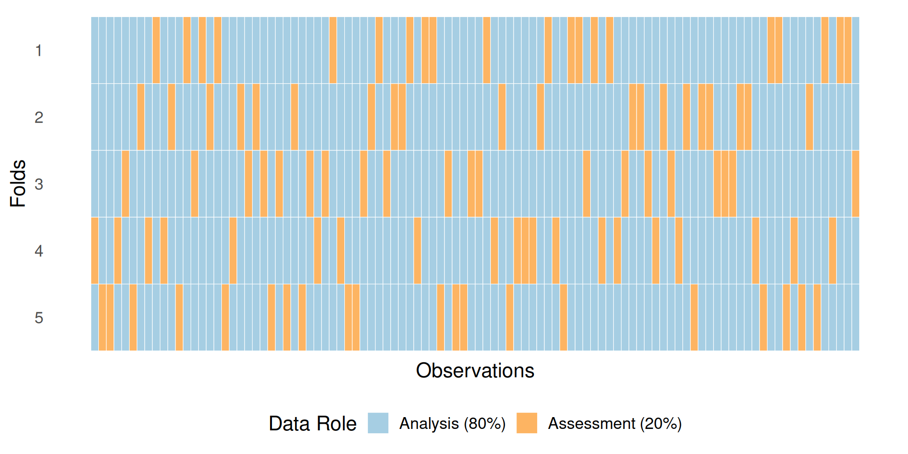Figure 6: Conceptual diagram showing the random assignment of observations to the analysis and assessment groups.
Cross Validation Strategies
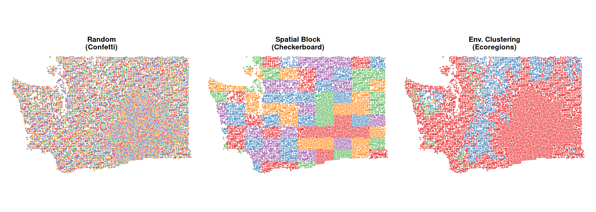Figure 7: Three validation strategies. Left: Random splitting mixes train/test points. Middle: Spatial blocking forces geographic separation. Right: Clustering blocks by environmental similarity. (Note the outline for the Columbia Plateau. See Figure 3.)
Analysis vs. Assessment
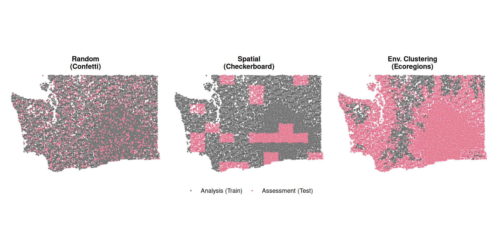Figure 8: Visualization of Fold 1 across three cross-validation strategies. Magenta points represent the held-out assessment set.
Models
Engines
- Logistic Regression
- MARS
- Random Forest
- XGBoost
Recipe A: With Coords
Recipe B: No Coords
Recipe C: Extensible
recipe(forested ~ ., data = train_data) %>%
update_role(geometry, lat, lon, new_role = "id") %>%
# 1. Remove political/time markers
step_rm(northness, county, year) %>%
# 2. Add Physics (Aridity & Temp Range)
step_ratio(precip_annual, denom = denom_vars(temp_annual_max)) %>%
step_mutate(
temp_range = temp_annual_max - temp_annual_min,
vpd_range = vapor_max - vapor_min
) %>%
# 3. Fix Skew (Critical for Logistic Regression)
step_YeoJohnson(elevation) %>%
step_dummy(all_nominal_predictors()) %>%
step_normalize(all_numeric_predictors())YeoJohnson Transformation
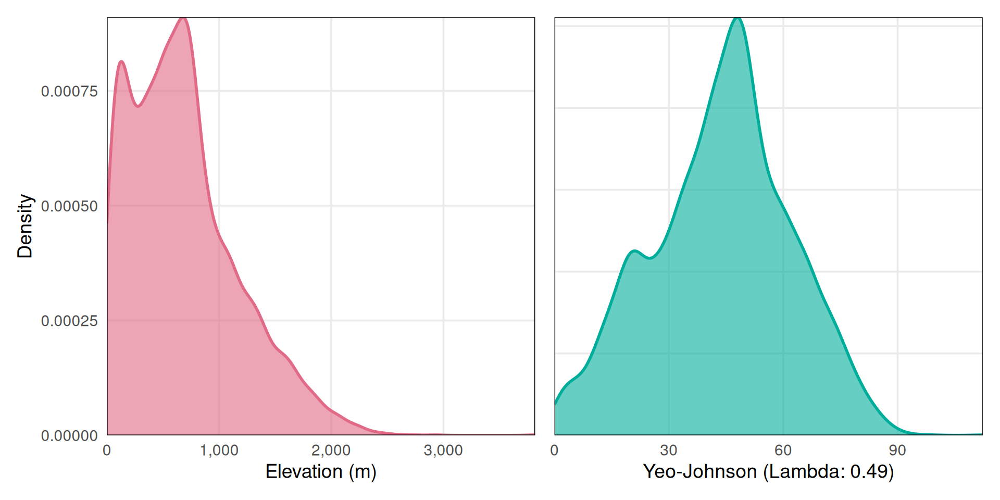Normalizing Elevation via Yeo-Johnson Transformation. The raw elevation data (left) exhibits strong right-skewness, which can degrade linear model performance. Applying a Yeo-Johnson transformation with λ=0.49 (right) successfully normalizes the distribution, satisfying the linearity assumptions required for the Extensible Logistic Regression model.
Resampling Strategies
Results
Spatial Validation Analysis
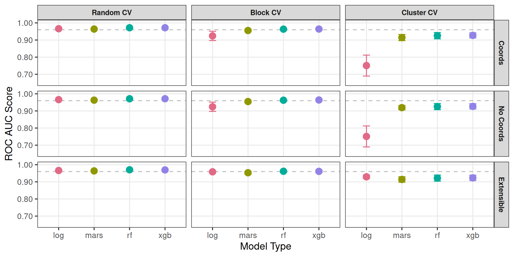Figure 9: Comparison of Model Performance (ROC AUC) across three spatial validation strategies. Benchmark (0.96 ROC AUC) indicated by the horizontal dashed line.
Performance Stability
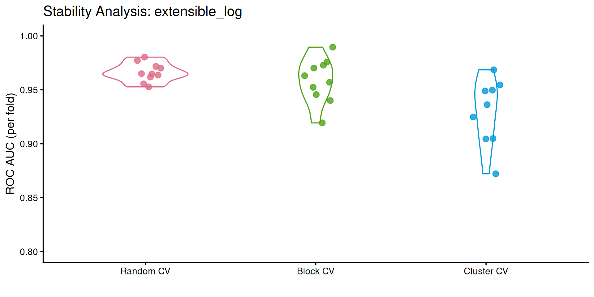Figure 10: Distribution of ROC AUC scores across individual cross-validation folds. Note the variance in scores by resampling method.
Predict on Test Set
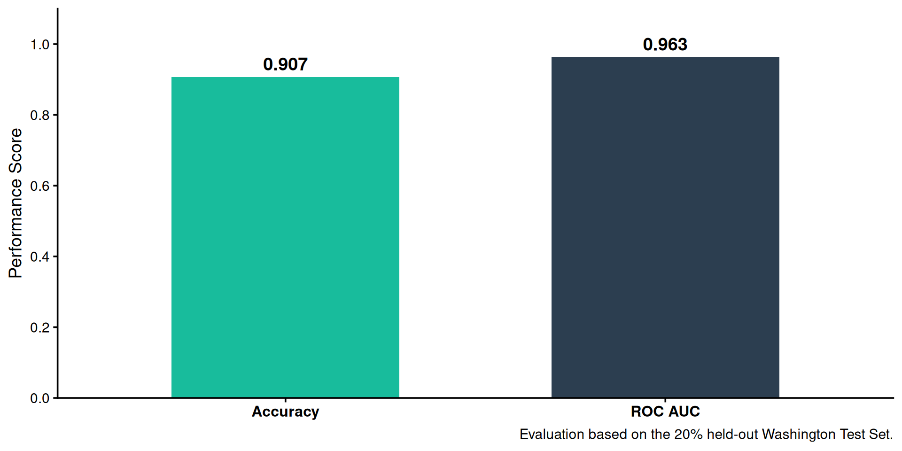Figure 11
Test vs. Resample Performance
| Final Model Performance | |||
| Winner: extensible_log | |||
| Model | Validation AUC1 | Test AUC2 | Test Accuracy2 |
|---|---|---|---|
| extensible_log | 0.929 | 0.963 | 0.907 |
| 1 Mean ROC AUC across spatial cross-validation folds. | |||
| 2 Evaluated on the 20% independent Washington holdout set. | |||
Confusion Matrix
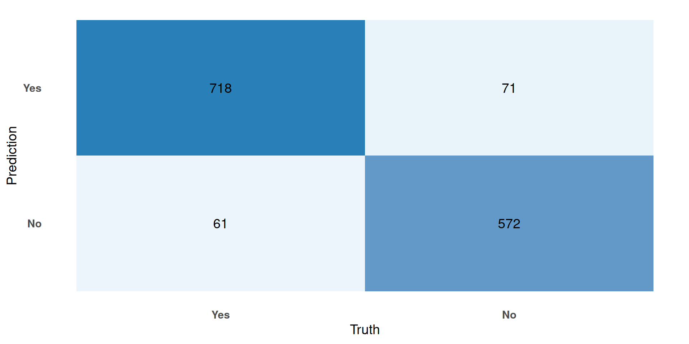Figure 12: Confusion matrix showing the classification performance of the final model on the 20% held-out Washington test set.
Spatial Error Analysis
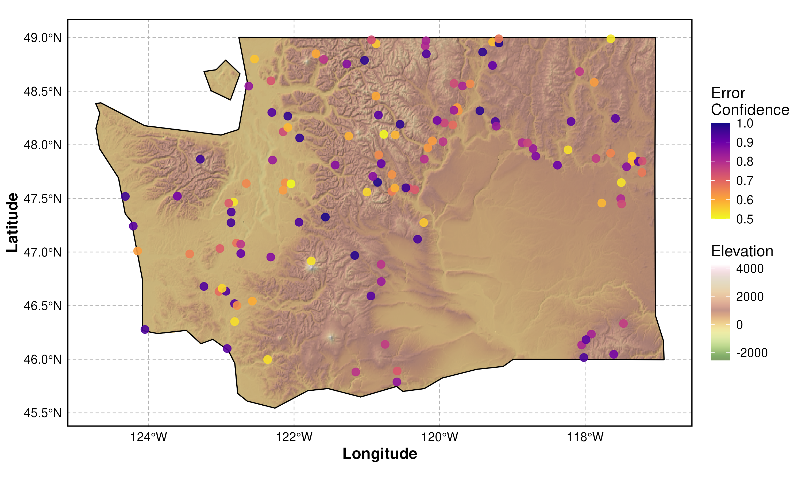Figure 13: Map showing Type I and II errors from model. Points are shaded from purple to bright yellow based upon the absolute error of the prediction probability. Note the lack of errors in the Columbia Basin.
Spatial Transferability
The Goal of Prediction
“The fundamental goal of a model is not to describe the data we have, but to predict the data we don’t.”
— Max Kuhn & Kjell Johnson, Applied Predictive Modeling
Assessing Domain Applicability

Figure 14: Area of Applicability (AOA) Analysis. The Dissimilarity Index (DI) measures how different the Georgia environment is from the Washington training data. Brighter colors (Yellow) indicate high dissimilarity. Note the similarity to the Level III Ecoregion plot Figure 3.
External Validation: Georgia

Figure 15: External Validation: Predicted vs. Actual. A side-by-side comparison of the model’s predictions (Left) versus the true forest inventory (Right).
Quantifying the Error

Figure 16: Confusion Matrix (Georgia). The model accuracy drops significantly compared to Washington. Note the high number of False Positives (Prediction: Yes / Truth: No), confirming the risk of extrapolation.
Mapping the Failures

Figure 17: Spatial Distribution of Errors. Note the increasing density of errors as latitude decreases.
Lessons Learned
- Accuracy Collapse: ~89% (WA) \(\to\) ~54% (GA).
- AOA Validation: The “Yellow Zone” correctly flagged the risk.
- The Trap: High confidence in “Phantom Forests.”
- The Fix: Quantify domain distance before deployment.
References
[1]
E. Pebesma and R. Bivand, “Spatial Data Science.” https://r-spatial.org/book/, Jan. 2025.
[2]
U.S. Environmental Protection Agency, “Level III and IV Ecoregions of the Continental United States.” Corvallis, OR, 2013.
[3]
J. M. Omernik, “Ecoregions of the Conterminous United States,” Annals of the Association of American Geographers, vol. 77, no. 1, pp. 118–125, Mar. 1987, doi: 10.1111/j.1467-8306.1987.tb00149.x.
[4]
D. R. Roberts et al., “Cross-validation strategies for data with temporal, spatial, hierarchical, or phylogenetic structure,” Ecography, vol. 40, no. 8, pp. 913–929, Aug. 2017, doi: 10.1111/ecog.02881.
[5]
M. Kuhn, Tidy Modeling with R. Sebastopol: O’Reilly Media, Incorporated, 2022.
[6]
T. S. Frescino, G. G. Moisen, P. L. Patterson, C. Toney, and G. W. White, “‘FIESTA’: A forest inventory estimation and analysis R package,” Ecography, vol. 2023, no. 7, p. e06428, Jul. 2023, doi: 10.1111/ecog.06428.
[7]
G. W. White et al., “A method for empirically assessing small area estimators via bootstrap-weighted k-nearest-neighbor artificial populations, with applications to forest inventory,” Forestry: An International Journal of Forest Research, p. cpaf071, Nov. 2025, doi: 10.1093/forestry/cpaf071.
[8]
G. W. White et al., “Small area estimation of forest biomass via a two-stage model for continuous zero-inflated data,” Canadian Journal of Forest Research, vol. 55, pp. 1–19, Jan. 2025, doi: 10.1139/cjfr-2024-0149.